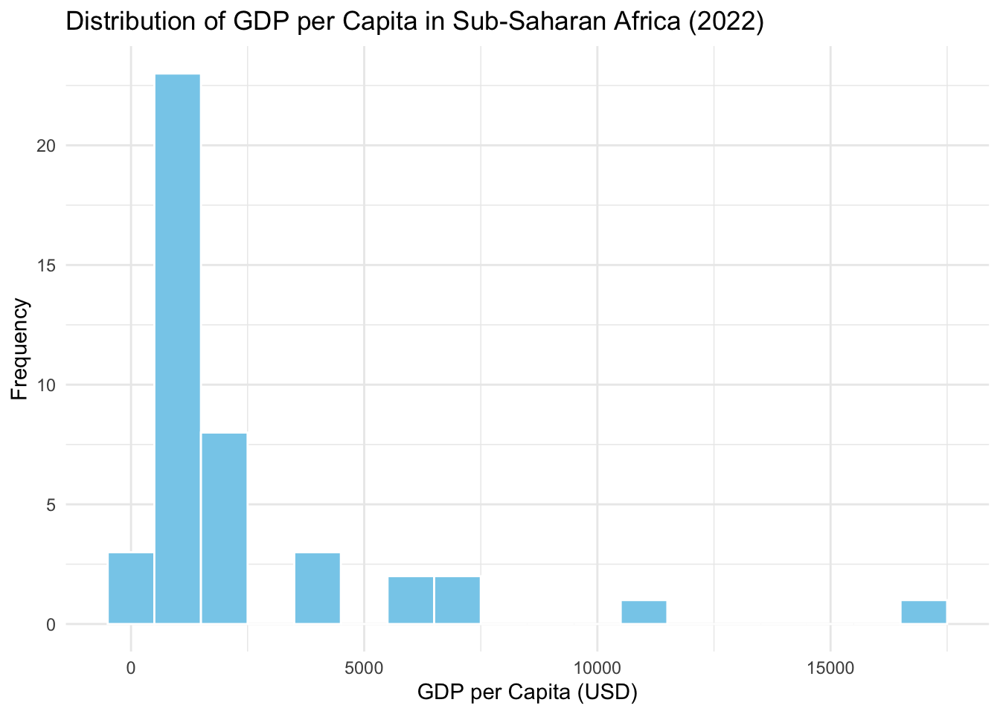

# A tibble: 173 × 7
Country `Country Code` Region GDP_1995 GDP_2022 POP_1995
<chr> <chr> <chr> <dbl> <dbl> <dbl>
1 Albania ALB Europ… 4743. 14318. 3.19
2 Algeria DZA Middl… 81507. 179000 28.5
3 Andorra AND Europ… 1765. 3149. 0.0629
4 Angola AGO Sub-S… 22469. 81810. 13.9
5 Antigua… ATG Latin… 825. 1546. 0.0684
6 Argenti… ARG Latin… 348000 598000 34.9
7 Armenia ARM Europ… 3084. 14212. 3.32
8 Austral… AUS East … 709000 1580000 18.0
9 Austria AUT Europ… 269000 425000 7.95
10 Azerbai… AZE Europ… 8473. 56692. 7.68
# ℹ 163 more rows
# ℹ 1 more variable: POP_2022 <dbl>R Lab 4 Solutions
I am grateful to Professor Dan Levy and previous API-209 TAs for the creation of this portion of the problem set.
QUESTION 2 – LEARNING ABOUT RWANDA’S ECONOMY
GUIDANCE ON SOLVING R QUESTIONS
In most API-209 problem sets, you will encounter questions designed to help you acquire R coding skills. As you saw in the first day of classes, there are some people in your class that have extensive coding experience and others who are new to coding. Regardless of where you stand, here are a few tips to solve R questions:
In every problem set, you will need to set up your environment:
- You should create a subdirectory for Problem Set 1 and keep all your data, code, and work in that directory. You may also want to make an RStudio Project specifically for that project directory
There are high chances that you will get stuck with your code at some point; this is a very natural part of coding! Knowing how to troubleshoot becomes a key skill:
Google and AI tools like ChatGPT are extremely useful resources when you don’t know the command or code needed to solve a problem. We encourage you to leverage them on your learning process. However, our advice is that you refer to AI only after having tried to figure out how to do it by yourself as this will better allow you to develop your R skills
If you have not found the answers online, ask your CAs or classmates for help! It is very easy to get stuck on a problem for hours, even if it can be very quickly solved with guidance from a person knowledgeable in R
In some instances, we will ask you to create graphs or tables:
If we ask you to replicate them from an existing source, we expect you to produce something professional-looking and similar to the original work; but it does not need to match 100% of its elements
If you create your own visualization from scratch, we encourage you to adjust it to improve readability and professional appearance, even if we do not explicitly request it. However, you should not feel the pressure to do this if you are just getting started with R
INTRODUCING THE FINAL EXERCISE
This question serves two purposes: (i) getting you familiarized with some of the data you will use in the API - 209 and DEV - 401 final exercise and (ii) developing your R skills to analyze data.
The objective of the final exercise is to give you an opportunity to apply the analytic tools you will acquire in API-209 and DEV-401 to a real policy setting. You will have R exercises in problem sets that will introduce you to the challenges you will be working on, help you get a head start in your project, and increase your chances of producing a final output you are proud of.
Q2 PART 1: UNDERSTANDING RWANDA’S ECONOMY
The dataset for this question is an extract from World Bank’s World Development Indicators (WDI). Please download the dataset “PS1_dataset1.csv” from our Canvas website. First, familiarize yourself with the dataset. Then import it into R and answer the questions below. We will start by focusing on the gross domestic product (GDP), a concept you dealt with in your Macro class with Prof. Frankel. The WDI dataset reports GDP values in 2015 U.S. dollars, so you can directly compare values in different years.
(A) Explore the data set: An essential practice before doing any data analysis is to explore the data set. Here are some questions to ask:
- What is the unit of observation (i.e. country, year, country/year, etc.)?
- How many observations are in the data set?
- What are the key variables in the data set?
- For the key variables, how are they coded, what is the extent of missing data for key variables, and how will I deal with this missing data?
Once you have done this (no need to type answers to these questions, but do answer them), create an analysis data set in which:
- You keep only observations that have non-missing data for both GDP_1995 and GDP_2022. This will be the data set you will you for the remainder of this problem set, so assign it to an object you can use.
- You transform the population variables so that they are expressed in millions of people (for example, 158,000,000 should become 158).
- You transform the GDP variables so that they are expressed in millions of dollars
This will be the data set you will you for the remainder of this problem set, so assign it to an object you can use. Now report the mean and the number of observations for GDP 2022 for this analysis data set.
(B) Understanding Rwanda’s economic evolution: we will start by understand how Rwanda’s economy has evolved over time:
(B1) Report Rwanda’s GDP in 2022.
Answer: Rwanda’s GDP in 2022 was 1.2956^{4} million USD or $12.956 billion USD.
(B2) Calculate the GDP per capita in 1995 and in 2022 for Rwanda. Save your results to a new object.
Answer: See output above.
(B3) Calculate the increase in GDP per capita in Rwanda from 1995 to 2022 (in % change)
# A tibble: 1 × 3
gdp_pc_1995 gdp_pc_2022 perc_change
<dbl> <dbl> <dbl>
1 305. 940. 209.Answer: See output above.
(C) Comparing Rwanda to other African countries:
(C1) Calculate the GDP per capita in 1995 and in 2022 for each country in Sub-Saharan Africa. Report the average GPD per capita across Sub-Saharan Africa in 2022
[1] 2388.862Answer: The average GDP per capita across Sub-Saharan Africa in 2022 was 2388.8623609 million USD per person.
(C2) Calculate the increase in GDP per capita for each country in Sub-Saharan Africa from 1995 to 2022 (in % change). Report the average increase in GPD per capita from 1995 to 2022 across Sub-Saharan Africa
Answer: The average increase in GDP per capita from 1995 to 2022 across Sub-Saharan Africa was 55.4901874 million USD per person.
(C3) Rank all the countries of Sub-Saharan Africa in descending order first in terms of GPD per capita in 2022 and then in terms of GDP per capita growth from 1995 to 2022 (in % change). Report:
in which place Rwanda ends up in each case
two to five countries that are in a similar position (in terms of GDP per capita in 2022 and growth from 1995 to
# A tibble: 43 × 10
Country `Country Code` Region GDP_1995 GDP_2022 POP_1995
<chr> <chr> <chr> <dbl> <dbl> <dbl>
1 Seychel… SYC Sub-S… 718. 1713. 0.0753
2 Mauriti… MUS Sub-S… 5121. 13314. 1.12
3 Botswana BWA Sub-S… 6593. 17510. 1.54
4 Gabon GAB Sub-S… 9564. 15867. 1.12
5 South A… ZAF Sub-S… 193000 360000 44.0
6 Equator… GNQ Sub-S… 353. 9834. 0.561
7 Namibia NAM Sub-S… 4719. 11187. 1.61
8 Eswatini SWZ Sub-S… 2159. 4861. 0.954
9 Cabo Ve… CPV Sub-S… 522. 2161. 0.411
10 Nigeria NGA Sub-S… 155000 535000 108.
# ℹ 33 more rows
# ℹ 4 more variables: POP_2022 <dbl>, gdp_pc_1995 <dbl>,
# gdp_pc_2022 <dbl>, perc_change <dbl># A tibble: 43 × 10
Country `Country Code` Region GDP_1995 GDP_2022 POP_1995
<chr> <chr> <chr> <dbl> <dbl> <dbl>
1 Equator… GNQ Sub-S… 353. 9834. 0.561
2 Ethiopia ETH Sub-S… 13897. 106000 57.5
3 Rwanda RWA Sub-S… 1733. 12956. 5.69
4 Cabo Ve… CPV Sub-S… 522. 2161. 0.411
5 Mozambi… MOZ Sub-S… 3394. 19146. 15.6
6 Mauriti… MUS Sub-S… 5121. 13314. 1.12
7 Ghana GHA Sub-S… 16239. 68292. 17.4
8 Uganda UGA Sub-S… 9118. 44173. 20.7
9 Tanzania TZA Sub-S… 15016. 67104. 30.6
10 Burkina… BFA Sub-S… 3686. 16589. 10.4
# ℹ 33 more rows
# ℹ 4 more variables: POP_2022 <dbl>, gdp_pc_1995 <dbl>,
# gdp_pc_2022 <dbl>, perc_change <dbl>Answer: Rwanda had the 27th highest GDP per capita in 2022 but grew more since 1995 than all but two countries in the region. Countries in a similar position on both dimensions include Ethiopia, Uganda, and Tanzania.
(C4) Draw a histogram showing the distribution of GDP per capita in 2022 for countries in Sub-Saharan Africa, using bins that are $1,000 wide. Imagine this histogram were to appear in The Economist, i.e., make it well-labeled and professionally looking. Feel free to tweet it using #api209 or post it on our #r-tips Slack channel.

(D) Putting it all together: in one crisp paragraph (2-3 sentences), summarize your findings from your analyses in (a)-(c)
Answer: Answers may vary. Responses could mention Rwanda’s GDP in 2022 and its change since 1995, as well as how it stacks up against the rest of the region alongside some similar neighbors.
Q2 PART 2: UNDERSTANDING RWANDA’S EXPORTS
The dataset for this question is an extract from the Atlas of Economic Complexity. Please download the dataset “PS1_dataset2.csv” from our Canvas website. The dataset includes one single tab with the data extract that you will use for this question, containing data on Rwanda’s export per sector from 1995 to 2021. First, familiarize yourself with the worksheet then import these data into R and explore the dataset. You do not need to share your answer here, but we recommend you to use question (a) above as guidance. Once you have explored the dataset, please proceed with the rest of the questions.
(E) Understanding the evolution of Rwanda’s exports: produce a table summarizing the evolution of exports per sector. Each sector (e.g., agriculture, services, etc.) should be a row in your table, with each year representing a column. To make it easier to digest, (i) aggregate the different sectors into four buckets: agriculture, manufacturing - include chemicals, electronics, machinery, textiles, vehicles and other -, mining and metals – include metals, minerals, and stone -, and services (ii) show only exports for years 1995, 2005, 2015 and 2021.
[1] 0.2050781(F) Interpret your findings: what insights and patterns do you observe from your analysis in (e)?
Answer: It seems as through agriculture has always been an important part of the Rwandan economy, but has more recently been ecplipsed by the manufacturing sector. Services decreased between 2015 and 2021, while other sectors increased significantly since 2005, becoming even more valuable than the agriculture sector.